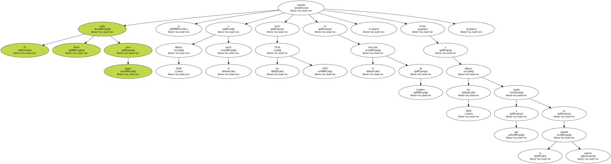

Los contratos futuros de petróleo subieron hoy , miércoles , en el mercado de Londres , a pesar del aumento de la producción decidido en Viena por la Organización de Países Exportadores de Petróleo ( OPEP ).

El crudo Brent para agosto se cotizaba a 29,40 dólares el barril hacia las 19.10 GMT en el mercado de Londres , frente a los 28,02 dólares a que estaba en la jornada anterior.
